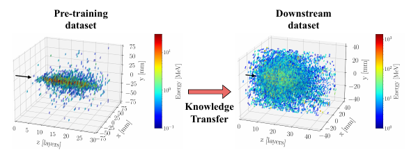

Summary of F. Gaede, G. Kasieczka, L. Valente, Cross-Geometry Transfer Learning in Fast Electromagnetic Shower Simulation, JINST 21 (2026) P07037, arXiv:2512.00187.
Generative models of calorimeter showers are much faster than Geant4, but each one is tied to the geometry it was trained on and has to be retrained from scratch for every design change or new detector.
We pre-train a point cloud shower model on photon showers in one calorimeter, that of the International Large Detector (ILD), and adapt it to a different one, the electron showers of the CaloChallenge. Because a point cloud keeps the deposits as they are, a new geometry does not need the showers to be re-voxelised.

With only a hundred showers from the new calorimeter, fine-tuning improves the geometric mean of the Wasserstein distances to Geant4 by 51% over training from scratch. Updating only the biases of the network (BitFit), 17% of the parameters, comes within 5% of full fine-tuning, while low-rank adaptation (LoRA) helps little even at high rank. This suggests that adapting to a new geometry is mostly a targeted recalibration of the model and not a change of what it has learned.
The pre-training uses a single detector, and without a comparison to multi-detector pre-training the study cannot say how it ranks against it. That comparison is the subject of the multi-geometry paper.
CaloTransfer on GitHub.